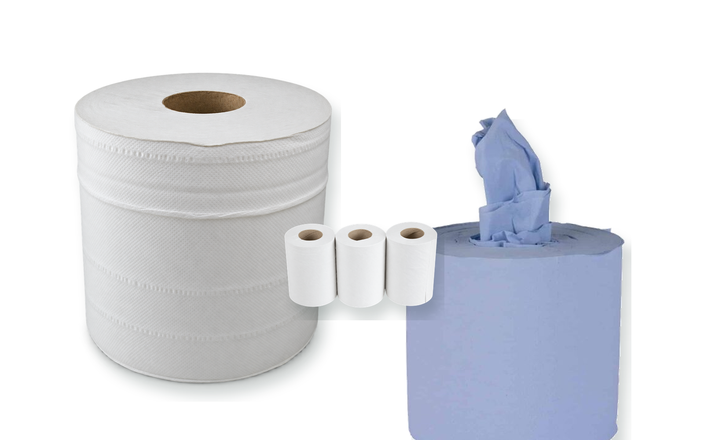

Pro-Active · wipersCentrefeed
Centrefeed
wipers
White and blue, flat-sheet and embossed rolls for cleaning and food-service routines.
- 50m, 100m, 150m and 300m formats
- 166mm or 175mm roll widths
- White mini centrefeed: 60m or 120m